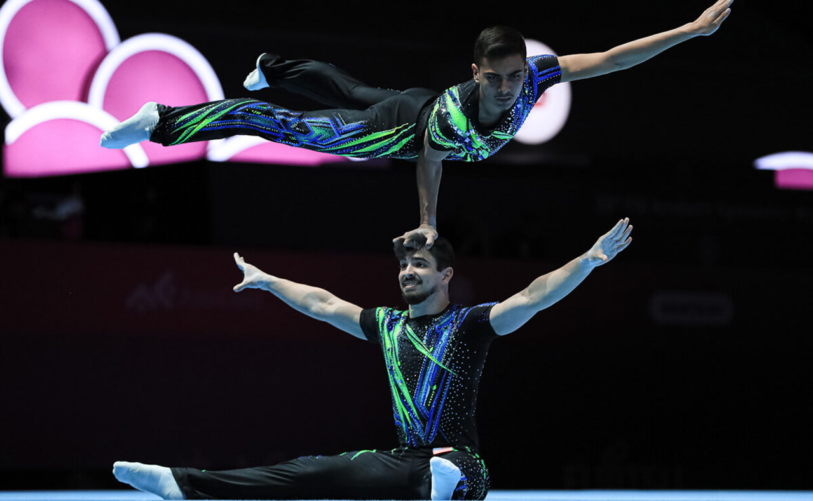
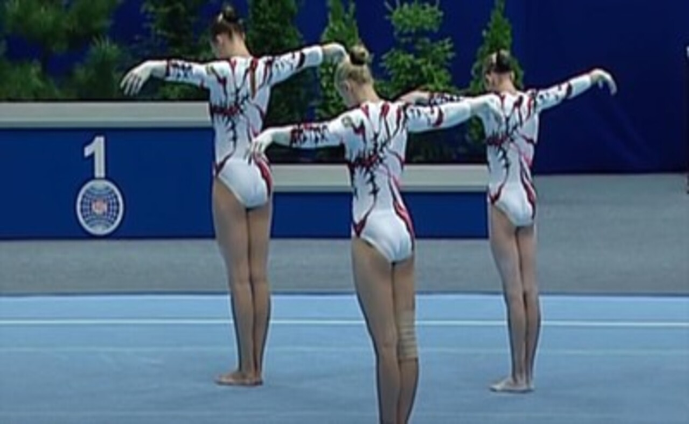
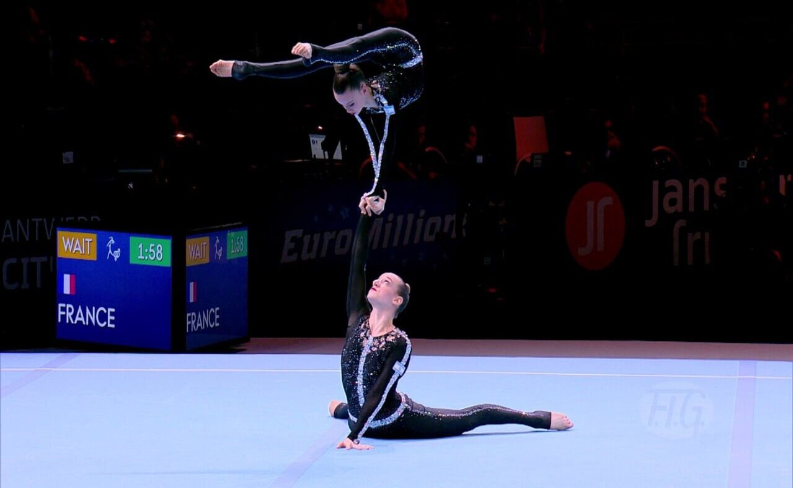

About Acrobatics Gymnastics, History and Interesting description about It
Firstly, its a one of the sports which is part of FIG. FIG is abreviation, which means Federation of International Gymnastics. It was founded on July 23, 1881, in Liege, Belgium. It's making it the world's oldest existing international sports organization. Originally called the European Federation of Gymnastics.
Little bit introduction of this type of sports. Acrobatic Gymnastics, unfortunately, isn't popular in the world. But it's really interesting in many aspects sport. You need to have a lot of muscles strong, good stretching skills, and be able to artistry and have a great dancing skills. Someone has some skills,
which was listed, at start of his sports career, but someone need to build-up from almostly zero. Firstly, you came to gym and learning individual elements and make condition exercices to improve you muscle forces, then you begin work in pair or in a groop. By the way, in acrobatics there are a places for everyone, and it's not depends tall or short your height parameters,
or body build, acrobatics will accept everyone. Besides, really neccesesary part in the life of every athlete - is a competitions or championships. There many types of their, like local, or national or simply international and mainly - which are include in FIG event calendar list. It was simple introduction of things, which are part of every's acrobatic athlete life every day, every month and every year.
At this website will be post more interesting articles and researches about Acrobatic Gymnastics. In future there will be a many amazing interviews with popular international athletes and coaches. Also will be post a new changes in rules, about new unusual original elements, and also about more competitions!
About Acrobatics Gymnastics at Gym & Competitions
Acrobatics Gymnastics is a pair-group sport. So, athletes usually works in constant groop or pair. There are 5 types of pairs and groops: Mixed pair, Men's pair, Women's pair, Women's group and Men's group. Every of this pair & group has the different works things and now We will explain about all of this types.

Mixed Pair
Include a male athlete at base position and a female athlete as a top. At this pair type underlines the power of base and beauty, sophistication, lightness, strechiness of a top.

Men's Pair
Include a male athlete at base position and a male athlete as a top. At this pair type underlines the power of strongest, power, and masculinity and strength exercices type pair.
.jpeg)
Men's Group
Include a 4 male athletes, where one is a base, two are middles and one is a top. At this pair type underlines the power, masculinity, with unusual balance piramides and high dynamics.

Women's Group
Include a 3 female athletes, where one is a base, one is a middles and one is a top. At this pair type underlines the power, strong, strechiness, goodliness, beauty, sophistication, lightness with unusual piramides.

Women's Pair
Include a female athlete at base position and a female athlete as a top. At this pair type underlines the power, strong, strechiness, beauty, sophistication, lightness, goodliness with unusual original elements.
Some information about competition's things
There are many parts of competition, which we talk about. Let's talk about competition exercise. It is contains of three major exercices: Balance routine, Dynamic routine and Combine routine. Every exercise have a some distinctions. Balance routine require an elements which athletes execite in static positions at feet to feet, feet to hand, hand to hand, head to hand and more varieties of that. There are two kinds of balance elements: mounts and static motions. Dynamic has the distinguishing feature. Base/es need to push their top to the height, during things top makes turns around and make specific elements, like salto (means frontflip or backflip), in different positions (like at group or like pike) or upright (planche), or the above elements with rotation from 180 degrees and more. Combine routine includes some elements from balance and some from dynamic. By the way, there are some proportion of element's amount, for example 3:5, 5:3, 4:4. There a some formula, which means that if you had a points value for dynamic - X points, a maximum balance points of value, which you can obtain will be - 2X. About difficulty points we will talk about later.
Routine, which include a static positions and required holding every elements for 3 seconds. Add in, more positions like hand to hand, hand to feet, two hands to one, hand to head and more.
Routine, which include an cooperate of all athletes, where bases are pushing and catching their tops. Add in, there more different forms of dynamic, like from base / bases start position to base / bases end position, or from base / bases start position to competition floor.
Routine, which include a balance elements and a dynamic elements. For example, there are same proportion like 3:5 or 4:4 or 5:3 for balance and dynamic elements. If was made dynamics element fro - X points, so maximum balance elements of points of value should - 2X. Difficulty will be a sum of balance and dynamic value points.
About evaluation on competitions and more
Let's introduse about criteria of evaluation the acrobatic perfomance during competition. The criteria contains of three main things like Execution, Artistry, Difficulty.
Firstly, the coefficient of execution is responsibility of purity of elements, and a correctness of them. There are some file, which has the information about how many points will lose athlete,if they make some mistake. Also athletes can lose some points of execution, if someone of their pair / group will bend arm, feet or elbow. Quantity countdown points of execution starts from 10. During the routine, depends of mistakes, it's decreases, and after end of a routine, it will be multiplies at x2. So if athletes receive a 9.2 points of execution, at report will be 18.400. We will talk about all execution details later.
Secondly, will talk about artistry. This part has a specific criteria of evaluation. In fact, pair / group of athletes already receive a 5 points, when they step up on the perfomance floor. Next 5 points are split for 5 criteria, which contains of topics like partnership, perfomance, expression, creativity, musicality. Every of this had 3 or more sub-topics, includes question, for example: "Do all partners project the emotion of exercise?", and a variable, if is true - 0.4, if it's middle - 0.2, if it's false - 0. It was little bit example. Based on criteria build all grade for artisrty. We will talk about later more.
Thirdly, next part will be topic about difficulty. Difficulty is a parameter, which is responsible for complication of each element during routine. Every element and some forms of it has the definite points value cost. So that means, if athletes do their routine, for example, balance routine - it they complete all off their 8 elements (at balance you have to do 5 - 8 elements, and on the dynamic and combine 6 elements), they will be receive 240 points of difficulty. Then after routine, points of difficulty divide by 100, then athletes will receive Difficulty coefficient: 2.40, which will add up to final grade.
The coefficient of execution is responsibility of element's purity, and a correctness of them. Quantity countdown points of execution from 10, and also during the routine it will be decreases, depends of mistakes. After end of routine, final coefficient will multiply at x2.
For example, if athletes received 9.2, they will be have a 18.400.
The coefficient of artistry consist of two parts. First part will be receive, if gymnasts are already go to competition floor, and they will have a 5 points. Another 5 points are split up for different criteria, like partnership, perfomance, expression, creativity, musicality. Each of this topics has 3 or more sub-topics, that are thematically related to their main topics.
For example, "Do all partners project the emotion of exercise?", and a variable, if is true - 0.4, if it's middle - 0.2, if it's false - 0. Based on criteria build all grade for artisrty.
The coefficient of difficulty is a parameter, which is responsible for complication of each element during routine. Every element and some forms of it has the definite points value cost. So that means, if athletes do their routine, for example, balance routine - it they complete all off their 8 elements (at balance you have to do 5 - 8 elements, and on the dynamic and combine 6 elements), they will be receive 240 points of difficulty. Then after routine, points of difficulty divide by 100, then athletes will receive Difficulty coefficient: 2.40, which will add up to final grade.
About age groups during the competition
Now we will talk about the age groups, which are present in FIG - calendar championships, like Internationals European / Asian / Pan - American Age Group Competitions, Junior European / Asian / Pan - American Championship, Senior European / Asian / Pan - American Championship, International World Age Group competition, Junior World Championship, Senior World Championship and more. There are 4 main age groups at this events: 11 - 16 , 12 - 18, 13 - 19 and Senior. Numbers mean the ranges of age athletes, which entitles them to take a part of competition at this age group. Senior is available if all athletes from pair or group has the 15+ age. Main differnces of this age - groups is a difficulty and couple another things.
Firstly, at 11 - 16 you need to make 4 compulsory elements from specific table of elements for 11 - 16 AG, and make 2 elements for pair / group choice. At this AG, athletes make only Balance and Dynamice routine.
Secondly, at 12 - 18 you need to make 70 points of difficulty at Dynamic, 80 points of difficulty at Balance, and 100 points of difficulty at Combine. Triple salto is fordidden at this age group. Allowable treshold for Balance, Dynamice and Combine is 100, 90, 120 respectively. But, at order will be going 70, 80 and 100. If it will be much more than threshold - there will a penalty for 1.0 point. Concerned the penalties, if height difference of athletes in pair / group will more then 35+ , the penalty will 0.5, if height parameter in the interval from 30 to 34.99, penalty will be 0.3.
Thirdly, at 13 - 19 you need to complete 110 points of difficulty at Dynamic, 120 points of difficulty at Balance, and 180 points of difficulty at Combine. Triple salto is not prohibited. Allowable treshold for Balance, Dynamice and Combine is 130, 140, 200 respectively. But, at order will be going 110, 120, 180. If it will be much more than threshold - there will a penalty for 1.0 point. Concerned the penalties, if height difference of athletes in pair / group will more then 35+ , the penalty will 1.0, if height parameter in the interval from 30 to 34.99, penalty will be 0.5.
Fourthly, at Senior category you can make unlimited points of difficulty in all routines. All the elements from difficulty table are available. Concerned the penalties, if height difference of athletes in pair / group will more then 35+ , the penalty will 1.0, if height parameter in the interval from 30 to 34.99, penalty will be 0.5.
12-18
Dynamic: 70
Balance: 80
Combined: 100
Triple salto is forbidden
If difficulty is >130 , >140 , >200 will penalty 1.0
If height difference is 35 +, penalty 0.5, if is 30 to 34.99, penalty will be 0.3, if less 29.99 penalty is absent
13-19
Dynamic: 110
Balance: 120
Combined: 180
If difficulty is >130 , >140 , >200 will penalty 1.0
If height difference is 35 +, penalty 1.0, if is 30 to 34.99, penalty will be 0.5, if less 29.99 penalty is absent
Senior
Dynamic:
Balance:
Combined:
Actually, there is no limit for Difficulty
If height difference is 35 +, penalty 1.0, if is 30 to 34.99, penalty will be 0.5, if less 29.99 penalty is absent
There are many details and interesting nuances concrened the acrobatics gymnastics. If it's really interesting, we invite you to read all of this article about acrobatic gymnastics in a specific section, which called Acrobatics
Read more about Acrobatics